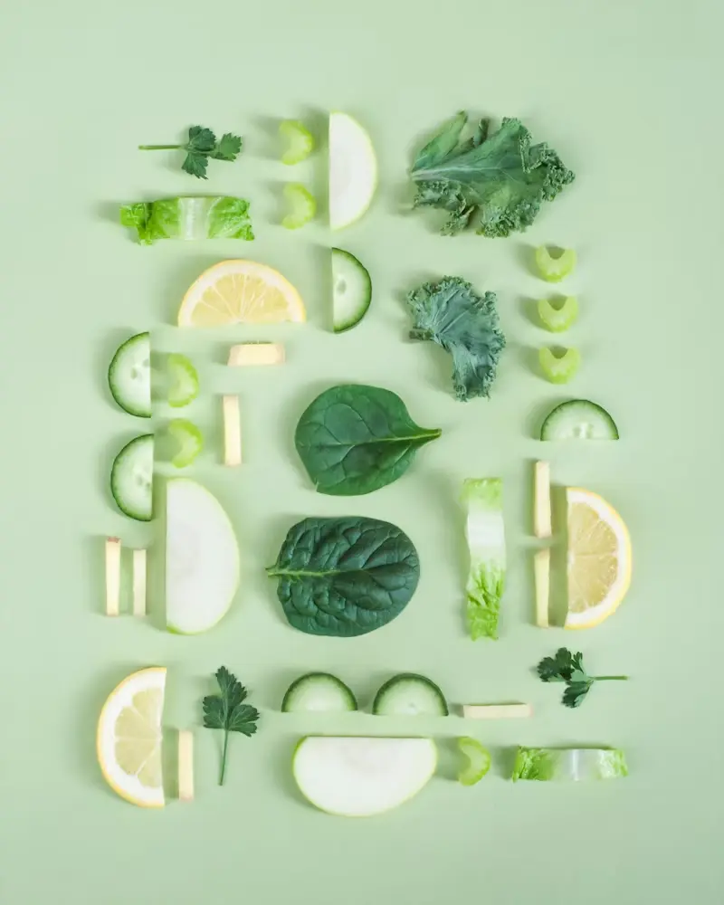
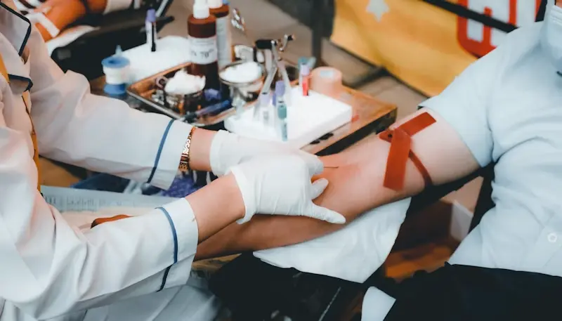
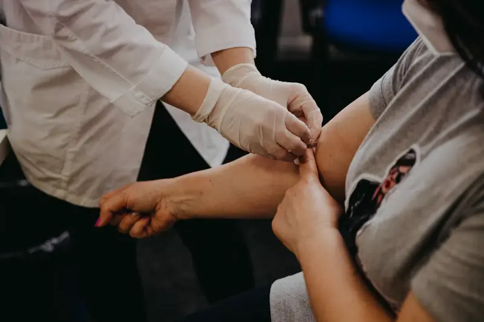
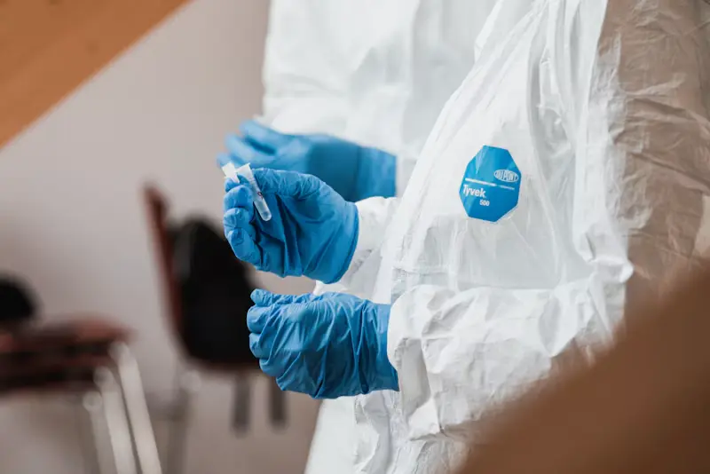
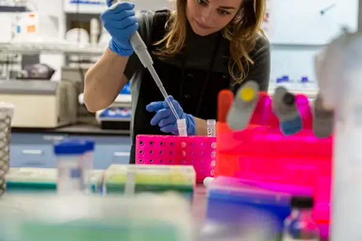

Prediabetes: the 5.7–6.4% window where you can still turn things around
What an HbA1c in the prediabetes range means, and the habits that bring it down.
One shows today, the other shows your last three months. Here's how doctors use both, and what your results mean for you.
Four numbers, one heart. A simple guide to cholesterol results — and the small changes that move them the most.
Barcodes, cold boxes, robots and a pathologist's signature — follow one tube from your doorstep to your report.

What an HbA1c in the prediabetes range means, and the habits that bring it down.
Fatigue, weight change and hair fall can all point to TSH. Here's when to test.
From methi to oats — everyday kitchen staples with real evidence behind them.
Pair the right foods with vitamin C and your next CBC can look very different.

The simple checklist that prevents repeat samples and confusing results.
NS1, IgM or platelets? The right test depends on how long you've had fever.

A calm, week-by-week guide for expectant mothers and their families.
Haemoglobin, vitamin D and B12 — and gentle food fixes for each.

How a machine finds a few copies of a virus in your sample — and why it takes a day.
No articles match that yet. Try another topic, or .

Editor's pickReference ranges, flags, units and those little H and L letters — Dr. Vikram Shah walks through a real (anonymised) report so you know exactly what you're looking at.
Pick a test to see the usual adult reference ranges. Ranges vary slightly by lab, age and sex — always read results with your doctor.
Every article is written by one of our specialists and reviewed by a second before it goes live.
Join 18,000 readers. No spam, no sales — just one doctor-written article and a seasonal health tip.